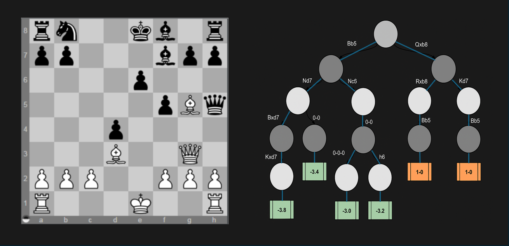

Have you ever confidently played your favorite chess opening, only to be dismantled by a bot that seemed to see ten steps ahead? It can be frustrating: you know the rules, understand tactics, even recognize some famous openings. Yet the bot wins — every time. And it feels like it isn't even trying hard.
So, what gives? Why can’t we beat these silicon beasts? The answer lies in how bots calculate the game tree much faster and more precisely than any human can.
In this blog, we’ll unravel the math and logic that makes chess AIs so powerful. And instead of theory alone, you’ll see how it works in action, through interactive examples and visual explanations.
Every chess position is like a branching tree. The number of possibilities increases dramatically as moves are made.
This explosion is known as the combinatorial complexity of chess. No human can explore it deeply without assistance.
If we think of chess as a tree, AI explores its branches. But how far? That depends on how clever the search algorithm is.
The core of most chess AIs is the Minimax algorithm. It's designed to simulate two perfect players: one trying to maximize its advantage, while the other tries to minimize it. This back-and-forth logic enables a bot to make strong predictions even without deep knowledge.
Here’s a simplified Python version of Minimax that evaluates material :
def minimax(board, depth, is_maximizing):
if depth == 0 or board.is_game_over():
return evaluate(board)
best_score = float('-inf') if is_maximizing else float('inf')
for move in board.legal_moves:
board.push(move)
score = minimax(board, depth - 1, not is_maximizing)
board.pop()
if is_maximizing:
best_score = max(score, best_score)
else:
best_score = min(score, best_score)
return best_score
This simple function already gives the bot the ability to plan ahead — and avoid traps. But in practice, we add enhancements like pruning, evaluation weights, repetition handling, and more.
Calculating every possible future is extremely expensive. To solve this, bots use alpha-beta pruning — a way to discard suboptimal moves early.
If a move branch already looks worse than one you've seen before, there's no need to continue down that path. This clever cutoff reduces the number of positions the AI has to check, allowing it to look deeper without sacrificing time.
The diagram below shows how a chess AI evaluates several possible continuations using a tree of moves and associated scores. Good lines are retained, bad ones are pruned.
The tree diagram illustrates how a chess AI evaluates multiple continuations in a given position using alpha-beta pruning. Each node represents a board state after a move, and each branch corresponds to a possible reply.
The white and black circles indicate which player's turn it is — white circles for White’s move, and black circles for Black’s move. This helps visualize the alternating nature of chess turns as the tree expands.
The AI evaluates positions at the leaf nodes and assigns them scores:
-3.8, -3.0) typically represent an advantage for Black.1-0 indicate winning outcomes for White, often a checkmate.
Importantly, some branches stop early — they’re pruned.
For example, after evaluating the left subtree (such as the line following Nd7),
the engine realizes that the Nc6 line can't outperform what’s already found.
So it skips further exploration down that path.
This demonstrates the power of alpha-beta pruning: it avoids evaluating clearly suboptimal moves, enabling the AI to search deeper while saving time and computation.
Minimax needs a way to assess board positions numerically. That’s where the evaluation function comes in. It assigns a score to each position, estimating how favorable it is for the current player.
Typical factors include:
For example, a position with +3.0 score means the AI thinks White is up roughly the value of a bishop and pawn.
Even our simple bot uses a version of this, making it capable of intelligent play without brute force.
Now that you've seen how bots "think", why not try it out? Below is a demo bot using minimax, evaluation, pruning, and a few tactical ideas like saving endangered pieces or delivering mate.
Yes! Try playing something like 1.e4 e5 2.Qh5 Nc6 3.Bc4 Ra8 4.Qxf7# and you will see — basic bots can be mated if they don’t look far enough ahead.
This happens because they are limited by depth: how many moves they calculate into the future. The deeper the search, the fewer mistakes they make. Elite engines like Stockfish look 30+ moves ahead in real time.
Traditional engines use handcrafted rules, but modern ones like AlphaZero or Stockfish NNUE incorporate neural networks. These networks learn evaluations by analyzing millions of games.
Instead of fixed rules, they learn patterns. This makes them far more dynamic and human-like — even creative in some cases!
Neural nets help prioritize which branches to explore and improve position evaluation through learned intuition.
The diagram above shows a simplified version of a neural network — input neurons on the left (like board features), hidden neurons in the middle (that mix and transform signals), and an output neuron on the right (which gives a score, like +1.5 or -2.0). In chess terms, the input layer might encode where each piece is, whose turn it is, castling rights, and more. The output tells how good the position is for White.
As the bot trains, it adjusts the weights between these layers so it can better predict outcomes. Over time, it starts recognizing things like strong outposts, weak pawns, or dangerous kings — without being told directly. This is how AlphaZero came up with moves that seemed strange at first but turned out to be brilliant. It learned strategy, not just tactics.
That’s why neural bots don’t just calculate deeper — they evaluate smarter.
The reason we struggle against bots isn’t that they are magically smart — it’s because they:
The combo of combinatorics, evaluation, alpha-beta logic, and neural learning creates something that, while artificial, plays like a genius.
Now you know its secrets. Good luck outsmarting it!